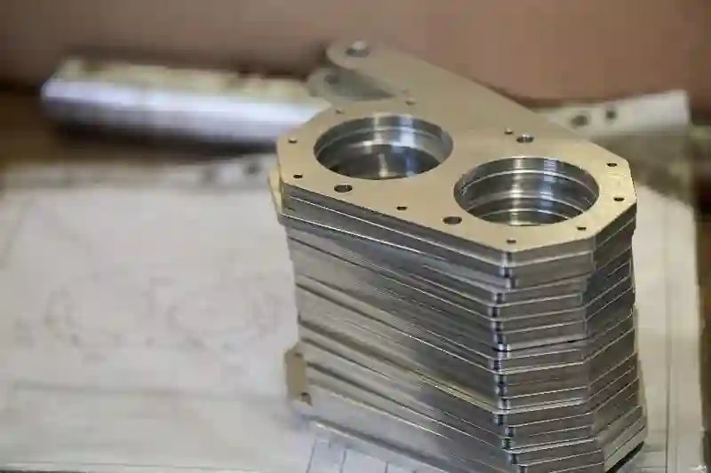
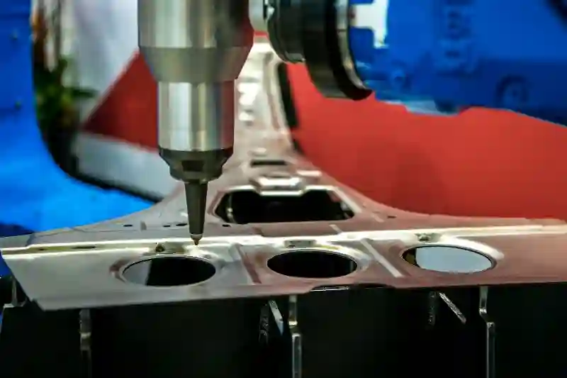
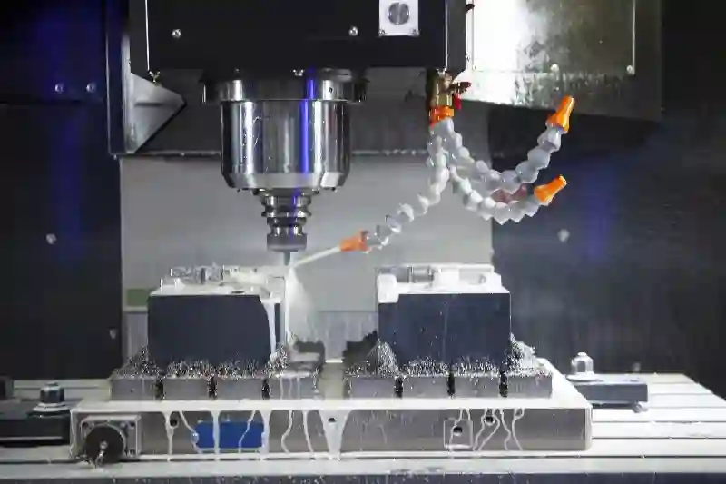
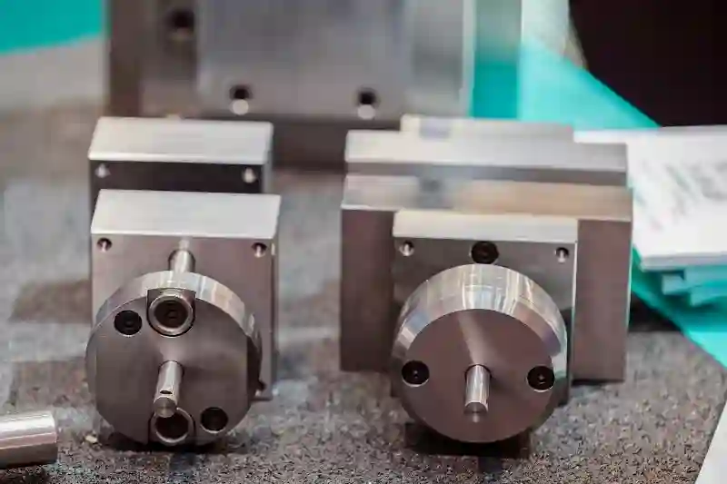

Prototip Üretim ve Ar-Ge Desteği ile Endüstriyel Gelişim
Endüstriyel ürün geliştirme süreçlerinde başarı, fikir aşamasının doğru şekilde somutlaştırılmasıyla başlar. Bu noktada prototip üretim ve ar-ge desteği, yalnızca bir ön numune oluşturmak değil, aynı zamanda tasarımın teknik olarak doğrulanmasını sağlayan stratejik bir adımdır. Ürünün fonksiyonelliği, üretilebilirliği ve uzun vadeli performansı bu aşamada test edilir.
Günümüzde sanayi firmaları, pazara çıkış süresini kısaltmak ve rekabet avantajı elde etmek için ürün geliştirme süreçlerini daha kontrollü yürütmek zorundadır. Bu gereklilik, endüstriyel prototip üretimi süreçlerini klasik üretim anlayışının ötesine taşır. Aymaksan Makina, prototip aşamasını mühendislik odaklı ele alarak tasarım, üretim ve test süreçlerini entegre biçimde yönetir. Bu yaklaşım, prototip üretim ve ar-ge desteği kapsamında ürünün tüm teknik risklerinin erken aşamada görülmesini sağlar.
Prototip Üretimin Endüstriyel Ürün Geliştirmedeki Rolü
Prototip üretimi, ürün fikrinin teoriden pratiğe aktarıldığı ilk somut aşamadır. Bu aşamada üretilen parçalar, yalnızca görsel doğrulama için değil; mekanik dayanım, tolerans uyumu ve montaj davranışını değerlendirmek için kullanılır. Özellikle tasarımdan prototipe üretim süreci, ürünün gerçek üretim koşullarına uygunluğunu ortaya koyar.
Aymaksan Makina’da prototipler, seri üretim öncesi teknik referans olarak ele alınır. Prototip aşamasında yapılan ölçümler ve testler, üretim sürecinde karşılaşılabilecek riskleri minimize eder. Bu yaklaşım sayesinde endüstriyel prototip üretimi, yalnızca geçici bir aşama değil, ürün geliştirme sürecinin temel yapı taşı haline gelir.




Ar-Ge Destekli Prototipleme Yaklaşımı
Tasarım Doğrulama ve Fonksiyonel Test Süreçleri
Tasarım doğrulama süreci, ürünün kağıt üzerindeki performansının gerçek koşullarda test edilmesini kapsar. Bu noktada prototip üretim ve ar-ge desteği, tasarımın fonksiyonel açıdan ne derece başarılı olduğunu ortaya koyar. Prototip üzerinde yapılan testler, ürünün kullanım senaryolarına verdiği tepkileri net biçimde gösterir.
Aymaksan Makine, bu süreçte üretim kabiliyetini mühendislik analiziyle birleştirir. Elde edilen veriler, ar-ge destekli ürün geliştirme çalışmalarının teknik altyapısını oluşturur ve sonraki revizyonlar için yol gösterici olur.
Malzeme Seçimi ve Üretilebilirlik Analizi
Prototip üretiminde doğru malzeme seçimi, ürünün performansını doğrudan etkiler. Kullanım amacı, mekanik yükler ve çevresel koşullar dikkate alınarak malzeme belirlenir. Bu aşamada sunulan özel parça prototipleme hizmetleri, yalnızca üretimi değil, üretilebilirliği de kapsar.
Aymaksan Makina’da yapılan üretilebilirlik analizleri, prototipin seri üretime uygunluğunu değerlendirir. Bu sayede ilerleyen aşamalarda oluşabilecek üretim sorunları erkenden tespit edilir.
Projeni Başlat
CNC Teknolojileri ile Prototip Üretimde Hassasiyet ve Tekrarlanabilirlik
Prototip üretim süreçlerinde CNC teknolojileri, ölçüsel doğruluk ve tekrarlanabilirlik açısından kritik bir rol üstlenir. Özellikle karmaşık geometrilere sahip parçaların üretiminde CNC altyapısı, tasarımın birebir karşılığını ortaya koyar. Bu noktada prototip üretim ve ar-ge desteği, yalnızca bir ön üretim aşaması değil; mühendislik doğrulamasının temel bileşeni haline gelir.
Aymaksan Makina’da kullanılan CNC tornalama ve frezeleme sistemleri, prototip parçaların seri üretimle birebir uyumlu olmasını sağlar. Bu yaklaşım, ürün geliştirme sürecinde elde edilen teknik verilerin güvenilirliğini artırır. Böylece endüstriyel prototip üretimi, teorik tasarımların sahada test edildiği kontrollü bir mühendislik sürecine dönüşür.
CNC Tornalama ile Fonksiyonel Prototip Parça Üretimi
CNC tornalama, dairesel ve simetrik geometrilere sahip prototip parçaların yüksek hassasiyetle üretilmesini mümkün kılar. Mil, burç ve bağlantı elemanları gibi bileşenler, prototip aşamasında gerçek çalışma koşullarına uygun şekilde işlenir. Bu süreçte uygulanan cnc prototip parça imalatı, fonksiyonel testler için güvenilir bir temel oluşturur.
Aymaksan Makina’da CNC tornalama süreçleri, prototipin yalnızca ölçüsel doğruluğunu değil; mekanik davranışını da değerlendirmeye imkân tanır. Bu sayede prototip aşamasında elde edilen sonuçlar, tasarımdan prototipe üretim süreci içerisinde kritik kararların alınmasına katkı sağlar.
CNC Frezeleme ve Dik İşleme Merkezlerinin Prototip Sürecindeki Rolü
CNC frezeleme ve dik işleme merkezleri, prototip üretiminde çok yüzeyli ve karmaşık parçaların işlenmesini mümkün kılar. Gövde parçaları, taşıyıcı yapılar ve montaj uyumu gerektiren bileşenler bu süreçte detaylı olarak değerlendirilir. Bu noktada endüstriyal prototip üretimi, ürünün geometrik doğruluğunu ortaya koyan önemli bir aşamadır.
Aymaksan Makina’nın dik işleme altyapısı, prototip parçaların yüzey kalitesi ve ölçü toleranslarını kontrol altında tutar. Bu yaklaşım, prototip üretim ve ar-ge desteği kapsamında prototipten seri üretime geçişte tutarlılık sağlar.
Prototip Üretiminde Kaynak ve Montaj Süreçlerinin Entegrasyonu
Prototip üretimi, çoğu zaman tekil parça imalatının ötesine geçerek montajlı sistemlerin test edilmesini gerektirir. Bu aşamada kaynak ve montaj süreçleri, ürünün yapısal bütünlüğünü ortaya koyar. Özel parça prototipleme hizmetleri, bu bağlamda yalnızca üretimi değil; montaj uyumunu da kapsar.
Aymaksan Makina’da prototip montaj süreçleri, kaynaklı ve mekanik bağlantıların birlikte değerlendirilmesiyle yürütülür. Prototip üzerinde yapılan montaj testleri, ürünün gerçek kullanım senaryolarına uygunluğunu gösterir. Bu yaklaşım, ar-ge destekli ürün geliştirme süreçlerinde teknik risklerin erken aşamada kontrol altına alınmasını sağlar.
Montaj Uyumunun Prototip Aşamasında Test Edilmesi
Bir ürünün prototip aşamasında montaj uyumunun test edilmesi, seri üretimde karşılaşılabilecek yapısal sorunların erken tespitini sağlar. Kaynaklı veya cıvatalı montaj gerektiren sistemlerde, prototip montajı ürünün gerçek çalışma senaryosunu ortaya koyar. Bu noktada özel parça prototipleme hizmetleri, yalnızca tekil parça üretimiyle sınırlı kalmaz.
Aymaksan Makine’de prototip montaj süreçleri, kaynak ve montaj hizmetleriyle entegre biçimde yürütülür. Böylece prototip, yalnızca ölçüsel olarak değil; sistem bütünlüğü açısından da değerlendirilir.
Kaynaklı Yapıların Ar-Ge Sürecindeki Rolü
Kaynaklı prototip yapılar, özellikle makine gövdeleri ve taşıyıcı konstrüksiyonlar için önemlidir. Kaynak dikişlerinin yerleşimi, mukavemet ve deformasyon davranışı prototip aşamasında analiz edilir. Bu analizler, ar-ge destekli ürün geliştirme yaklaşımının temelini oluşturur.
Bu kapsamda kullanılan teknik referanslar ve standartlar, Türkiye’de yetkili kurumlar tarafından belirlenir. Kaynaklı imalat süreçlerinde uygulanan teknik kriterler, Türk Standartları Enstitüsü kaynak standartları kapsamında tanımlanmaktadır.
Prototip Üretiminde Kalite Kontrol ve Ölçüm Süreçleri
Prototip üretimin en kritik aşamalarından biri kalite kontrol ve ölçüm faaliyetleridir. Üretilen prototip parçalar, ölçü aletleri ve ölçüm cihazlarıyla detaylı olarak analiz edilir. Bu aşamada elde edilen veriler, seri üretime geçiş kararının temelini oluşturur. prototip üretim ve ar-ge desteği, ölçülebilir kalite verileri olmadan tamamlanmış sayılmaz.
Aymaksan Makina’da prototip parçalar, proses içi ve son kontrol aşamalarından geçirilir. Tolerans sapmaları, yüzey pürüzlülüğü ve geometrik doğruluk değerleri kayıt altına alınır. Bu veriler, ürünün Ar-Ge dosyasının ayrılmaz bir parçası haline gelir.
Ölçüm Standartları ve Teknik Referanslar
Prototip ölçüm süreçlerinde kullanılan standartlar, uluslararası normlara dayalıdır. Türkiye’de bu normlara erişim ve uygulama rehberleri, yüksek otoriteli kurumlar tarafından yayınlanmaktadır. Endüstriyel ölçüm ve tolerans yönetimi hakkında teknik dokümanlar, TÜBİTAK ULAKBİM tarafından erişime sunulan yayınlarda yer almaktadır.
Kalite Kontrol ve Ölçüm ile Prototip Doğrulama Süreci
Prototip üretiminin güvenilirliği, ölçüm ve kalite kontrol süreçleriyle doğrudan ilişkilidir. Üretilen prototip parçalar, ölçü aletleri ve kalite kontrol sistemleriyle detaylı şekilde analiz edilir. Bu noktada prototip üretim ve ar-ge desteği, ölçülebilir ve raporlanabilir sonuçlar üzerinden değerlendirilir.
Aymaksan Makine’de prototip parçalar, proses içi ve son kontrol aşamalarından geçirilerek kayıt altına alınır. Elde edilen ölçüm verileri, tasarımdan prototipe üretim süreci içerisinde teknik doğrulamanın temelini oluşturur. Bu sayede prototip aşamasında elde edilen sonuçlar, seri üretim kararları için güvenilir bir referans haline gelir.
Projeni Başlat
Sektörlere Göre Prototip Üretim ve Ar-Ge Uygulamaları
Her sektörün ürün geliştirme dinamikleri ve teknik beklentileri farklıdır. Bu nedenle prototip üretim ve ar-ge desteği, standart bir üretim süreci olarak değil; sektörel ihtiyaçlara göre şekillenen esnek bir mühendislik yaklaşımı olarak ele alınmalıdır. Aymaksan Makina, farklı endüstrilerde edindiği üretim tecrübesi sayesinde prototip süreçlerini kullanım senaryolarına uygun şekilde yönetir.
Savunma Sanayiinde Prototip Üretimin Stratejik Önemi
Savunma sanayi projelerinde prototip üretimi, yüksek hassasiyet ve doğrulanabilirlik gerektirir. Bu alanda geliştirilen prototipler, uzun süreli testlerden geçerek ürünün operasyonel güvenilirliğini ortaya koyar. Özellikle endüstriyel prototip üretimi, savunma sanayiinde ürün performansının gerçek koşullarda değerlendirilmesini mümkün kılar.
Aymaksan Makina, savunma sanayii projelerinde prototip aşamasını mühendislik verileriyle destekler. Üretim sırasında elde edilen ölçüm ve test sonuçları, ar-ge destekli ürün geliştirme süreçlerinin teknik temelini oluşturur. Bu yaklaşım, ürünün ilerleyen fazlarında kalite ve izlenebilirlik sağlar. Türkiye’de savunma sanayii Ar-Ge faaliyetleri, Savunma Sanayii Başkanlığı koordinasyonunda yürütülmektedir.
Otomotiv ve Elektrikli Araç Sektöründe Prototipleme
Otomotiv ve elektrikli araç sektörlerinde prototip üretimi, hızlı geri bildirim ve yüksek doğruluk gerektirir. Yeni geliştirilen parçaların montaj uyumu ve dayanım özellikleri, seri üretim öncesinde test edilmelidir. Bu aşamada uygulanan cnc prototip parça imalatı, tasarım revizyonlarının kısa sürede hayata geçirilmesini sağlar.
Aymaksan Makina, otomotiv prototiplerinde tolerans yönetimi ve yüzey kalitesi konularına odaklanır. Prototip aşamasında elde edilen teknik veriler, tasarımdan prototipe üretim süreci içerisinde seri üretim planlamasına yön verir.
Medikal ve Biyomekanik Prototip Üretim Süreçleri
Medikal sektör, prototip üretiminde hata toleransının en düşük olduğu alanlardan biridir. Üretilen prototiplerin ölçüsel doğruluğu ve malzeme uygunluğu, doğrudan ürün güvenliğini etkiler. Bu noktada sunulan özel parça prototipleme hizmetleri, yalnızca üretimi değil; kalite doğrulamasını da kapsar.
Aymaksan Makine, medikal prototip projelerinde üretim süreçlerini detaylı ölçüm ve raporlama ile destekler. Bu yaklaşım, prototip üretim ve ar-ge desteği kapsamında regülasyonlara uyumun erken aşamada değerlendirilmesini sağlar.
Makine ve Endüstriyel Sistemlerde Prototip Geliştirme
Makine ve endüstriyel sistemlerde prototipler, çoğu zaman komple sistem davranışını temsil eder. Bu tür projelerde prototip, yalnızca bir parça değil; tüm mekanik yapının performansını test eden bir referanstır. endüstriyel prototip üretimi, bu açıdan sistem mühendisliği yaklaşımıyla ele alınmalıdır.
Aymaksan Makina, makine prototiplerinde montaj, kaynak ve mekanik uyumu bütüncül olarak değerlendirir. Bu süreçte elde edilen sonuçlar, ar-ge destekli ürün geliştirme çalışmalarına doğrudan katkı sağlar.
Prototip Üretim Süreçlerinde Ar-Ge Ekosistemi ile Entegrasyon
Prototip üretimi, çoğu zaman üniversiteler, araştırma merkezleri ve kamu destekli Ar-Ge programlarıyla birlikte yürütülür. Bu ekosistem, firmaların ürün geliştirme süreçlerini hızlandırır. Ar-ge destekli ürün geliştirme, yalnızca üretim altyapısıyla değil; bilgi ve teknoloji transferiyle de güçlenir.
Aymaksan Makina, Ar-Ge projelerinde teknik üretim partneri olarak konumlanır. Prototip üretimi sırasında elde edilen veriler, akademik veya kurumsal Ar-Ge çalışmalarının pratik karşılığını oluşturur. Türkiye’de Ar-Ge projeleri ve destek programları, TÜBİTAK Ulusal Destek Programları kapsamında yürütülmektedir.
Prototipten Seri Üretime Geçişte Ar-Ge Verilerinin Kullanımı
Prototip üretimi sırasında elde edilen tüm ölçüm, test ve montaj verileri, seri üretim planlamasının temelini oluşturur. Bu veriler sayesinde üretim süreçleri optimize edilir, riskler minimize edilir. Endüstriyel prototip üretimi, bu yönüyle stratejik bir karar destek mekanizmasıdır.
Aymaksan Makine’de prototipten seri üretime geçiş, Ar-Ge çıktılarıyla desteklenen planlı bir süreçtir. Bu yaklaşım, üretimde sürdürülebilir kalite ve verimlilik sağlar.
Ar-Ge Ekosistemi ile Uyumlu Prototip Üretim Süreçleri
Prototip üretimi, çoğu zaman Ar-Ge merkezleri, üniversiteler ve kamu destekli projelerle entegre yürütülür. Bu ekosistem, ürün geliştirme süreçlerinin teknik altyapısını güçlendirir. Prototip üretim ve ar-ge desteği, bu noktada yalnızca üretim değil; bilgi ve veri paylaşımını da kapsar.
Aymaksan Makine, Ar-Ge projelerinde üretim partneri olarak konumlanır. Prototip sürecinde elde edilen teknik veriler, tasarımdan prototipe üretim süreci boyunca Ar-Ge çalışmalarının pratik karşılığını oluşturur.
Projeni Başlat
Prototip Üretim Süreçlerinde Zaman, Maliyet ve Risk Yönetimi
Prototip üretimi, yalnızca teknik doğrulama değil; aynı zamanda zaman ve maliyet planlaması gerektiren stratejik bir süreçtir. Bu aşamada yapılan doğru planlama, ürün geliştirme sürecinin verimli ilerlemesini sağlar. Özellikle prototip üretim ve ar-ge desteği, teknik belirsizliklerin kontrol altına alınmasında önemli bir rol oynar.
Aymaksan Makina, prototip projelerini proje bazlı bir yaklaşımla ele alır. Her prototip çalışması; üretim süresi, malzeme seçimi ve işleme yöntemleri açısından önceden analiz edilir. Bu yaklaşım, tasarımdan prototipe üretim süreci içerisinde öngörülebilirlik sağlar ve plansız revizyonların önüne geçer.
Prototip Aşamasında Maliyet Optimizasyonu
Prototip üretiminde maliyet optimizasyonu, seri üretime kıyasla farklı önceliklere sahiptir. Buradaki temel amaç, minimum maliyet değil; doğru mühendislik çözümünü elde etmektir. Bu noktada endüstriyel prototip üretimi, uzun vadeli maliyetleri düşüren stratejik bir yatırım olarak değerlendirilir.
Aymaksan Makina’da maliyet analizi; işleme süreleri, takım seçimi ve malzeme verimliliği dikkate alınarak yapılır. Prototip aşamasında elde edilen bu veriler, ar-ge destekli ürün geliştirme süreçlerinde seri üretim planlamasına doğrudan katkı sağlar.
Zaman Yönetimi ve Prototip Teslim Süreleri
Ürün geliştirme projelerinde zaman faktörü, pazara çıkış hızını doğrudan etkiler. Prototipin planlanan süre içerisinde tamamlanması, Ar-Ge takviminin sağlıklı ilerlemesini sağlar. Bu aşamada uygulanan cnc prototip parça imalatı, hızlı ve esnek üretim kabiliyeti sunarak zaman yönetimini destekler.
Aymaksan Makina, prototip projelerinde teslim sürelerini net üretim planlarıyla yönetir. Bu yaklaşım, prototip üretim ve ar-ge desteği kapsamında müşterilere güvenilir ve öngörülebilir süreçler sunar.
Prototip Üretiminde Teknik ve Operasyonel Risklerin Yönetimi
Prototip üretimi, yeni tasarımlar ve farklı üretim senaryoları nedeniyle belirli riskler barındırır. Bu risklerin erken aşamada tanımlanması, ürün geliştirme sürecinin başarısını artırır. Özel parça prototipleme hizmetleri, bu noktada kontrollü bir test ortamı sağlar.
Aymaksan Makine, prototip üretim sürecinde olası teknik riskleri üretim öncesi analizlerle değerlendirir. Gerekli durumlarda alternatif üretim yöntemleri devreye alınarak ar-ge destekli ürün geliştirme süreçleri güvence altına alınır.
Ar-Ge Projelerinde Mühendislik Danışmanlığı ve Teknik Destek
Prototip üretimi, çoğu zaman mühendislik danışmanlığı ile desteklenmesi gereken bir süreçtir. Tasarımın üretilebilirliğe uygun hale getirilmesi, toleransların optimize edilmesi ve malzeme seçimleri bu kapsamda değerlendirilir. Prototip üretim ve ar-ge desteği, bu noktada yalnızca üretim değil; teknik rehberlik de sunar.
Aymaksan Makine, Ar-Ge projelerinde üretim tecrübesini mühendislik bakış açısıyla birleştirir. Prototip sürecinde yapılan teknik yönlendirmeler, tasarımdan prototipe üretim süreci boyunca ürünün daha verimli hale gelmesini sağlar.
Teknik Resim ve CAD Verilerinin Prototip Sürecindeki Önemi
Prototip üretiminin temelini teknik resimler ve CAD verileri oluşturur. Bu verilerin doğruluğu, prototipin başarısını doğrudan etkiler. Tasarımdan prototipe üretim süreci, bu aşamada disiplinli bir veri yönetimi gerektirir.
Aymaksan Makina, müşterilerden gelen teknik dokümanları üretim öncesi detaylı şekilde analiz eder. Gerekli görülen durumlarda üretilebilirlik odaklı revizyon önerileri sunulur. Bu yaklaşım, cnc prototip parça imalatı süreçlerinde hatasız üretimi destekler.
Aymaksan Hizmetleri ile Prototip Süreçlerinin Entegre Yapısı
Prototip üretimi, Aymaksan Makina’nın sunduğu diğer hizmetlerle doğrudan ilişkilidir. Bu bütüncül yapı, prototipten seri üretime geçiş sürecini sorunsuz hale getirir. Endüstriyel prototip üretimi, aşağıdaki hizmetlerle entegre bir yapı oluşturur:
- Özel Talaşlı İmalat
- CNC Tornalama
- CNC Frezeleme / Dik İşleme
- Kaynak ve Montaj Hizmetleri
- Kalite Kontrol ve Ölçüm Hizmetleri
Bu hizmetler arasındaki entegrasyon, prototip üretim ve ar-ge desteği süreçlerinin teknik tutarlılığını güçlendirir.
Projeni Başlat
Prototip Üretiminde Sürdürülebilirlik ve Uzun Vadeli İş Ortaklığı
Ürün geliştirme süreçlerinde sürdürülebilirlik, yalnızca çevresel faktörlerle sınırlı değildir. Teknik süreklilik, üretim kalitesi ve uzun vadeli iş birlikleri de bu kavramın önemli bileşenleridir. Bu noktada prototip üretim ve ar-ge desteği, tek seferlik bir hizmet değil; ürünün tüm yaşam döngüsünü kapsayan stratejik bir iş ortaklığı olarak değerlendirilmelidir.
Aymaksan Makina, prototip projelerinde edindiği üretim tecrübesini uzun vadeli bir mühendislik yaklaşımıyla sunar. Prototip aşamasında elde edilen teknik veriler, ilerleyen revizyonlar ve seri üretim kararları için kalıcı bir referans oluşturur. Bu yaklaşım, endüstriyel prototip üretimi süreçlerinde sürdürülebilir kaliteyi mümkün kılar.
Prototipten Seri Üretime Geçişte Güvenilir Süreç Yönetimi
Prototip üretimin nihai amacı, seri üretime sorunsuz geçiş sağlamaktır. Bu geçiş sürecinde prototip üzerinde yapılan ölçümler, montaj testleri ve fonksiyonel analizler belirleyici rol oynar. Tasarımdan prototipe üretim süreci, bu veriler sayesinde planlı ve kontrollü biçimde ilerler.
Aymaksan Makine’de prototipten seri üretime geçiş, rastlantısal kararlarla değil; mühendislik verileriyle desteklenen bir süreç olarak ele alınır. Prototip aşamasında elde edilen tolerans ve üretim parametreleri, ar-ge destekli ürün geliştirme çalışmalarıyla seri üretim altyapısına entegre edilir.
Ar-Ge Odaklı Üretimde Sürekli İyileştirme Yaklaşımı
Ar-Ge projeleri, statik değil; sürekli gelişen süreçlerdir. Prototip üretimi sırasında elde edilen geri bildirimler, ürünün bir sonraki versiyonunun geliştirilmesinde temel rol oynar. Bu noktada cnc prototip parça imalatı, tasarım iyileştirmelerinin hızlı ve kontrollü şekilde uygulanmasını sağlar.
Aymaksan Makine, prototip projelerinde sürekli iyileştirme prensibini benimser. Üretim ve ölçüm verileri, her yeni prototip aşamasında değerlendirilerek daha verimli çözümler geliştirilir. Bu yaklaşım, özel parça prototipleme hizmetleri kapsamında teknik mükemmeliyeti destekler.
Aymaksan Makina ile Prototip Üretimde Güvenilir Çözüm Ortağı
Prototip üretimi, doğru üretim ortağıyla yürütüldüğünde firmalara önemli rekabet avantajı kazandırır. Teknik altyapı, mühendislik disiplini ve kalite anlayışı; bu süreçte belirleyici unsurlardır. Prototip üretim ve ar-ge desteği, Aymaksan Makina’nın talaşlı imalat tecrübesiyle bütünleşir.
Aymaksan Makina, her prototip projesini özgün gereksinimlere göre ele alır. CNC altyapısı, kalite kontrol süreçleri ve mühendislik yaklaşımı sayesinde endüstriyel prototip üretimi aşamasından seri üretime kadar uzanan süreçler kontrollü ve öngörülebilir hale gelir.
Prototip Üretim Sürecinde Mühendislik Odaklı Yaklaşımın Önemi
Prototip aşaması, bir ürünün yalnızca ilk örneğinin ortaya çıkması değil; aynı zamanda mühendislik doğruluğunun test edildiği kritik bir süreçtir. Bu noktada prototip üretim ve ar-ge desteği, tasarımın üretilebilirliğini ve fonksiyonel başarısını değerlendirmek için stratejik bir rol üstlenir. Ürünün gerçek çalışma koşullarında nasıl davranacağı, bu aşamada elde edilen teknik verilerle netleşir.
Mühendislik odaklı prototip yaklaşımı, yalnızca teknik çizime bağlı kalmadan üretim süreçlerini de analiz etmeyi gerektirir. Özellikle endüstriyel prototip üretimi, tolerans yönetimi, malzeme davranışı ve montaj uyumu gibi kritik kriterlerin erken aşamada test edilmesini sağlar. Bu sayede seri üretim öncesinde oluşabilecek yapısal ve fonksiyonel riskler minimize edilir.
Aymaksan Makine’de prototip süreçleri, üretim kabiliyeti ile mühendislik bakış açısının birleştiği kontrollü bir yapı içerisinde yürütülür. Prototip sırasında elde edilen ölçüm ve test sonuçları, yalnızca mevcut ürünü doğrulamakla kalmaz; aynı zamanda sonraki revizyonlar için güçlü bir veri tabanı oluşturur. Bu yaklaşım, prototip üretim ve ar-ge desteği süreçlerini tek seferlik bir çalışma olmaktan çıkararak sürekli gelişen bir ürün yolculuğuna dönüştürür.
Ürün geliştirme sürecinde zaman ve maliyet avantajı sağlamak isteyen firmalar için prototip aşamasında yapılan her mühendislik yatırımı uzun vadeli kazanç anlamına gelir. Endüstriyel prototip üretimi sayesinde tasarım hataları erken aşamada tespit edilirken, üretim stratejileri de gerçek verilerle şekillendirilir. Böylece prototip üretim ve ar-ge desteği, ürünün pazara güçlü ve güvenilir şekilde sunulmasını mümkün kılar.
Sonuç – Prototip Üretim ve Ar-Ge Desteğinde Stratejik Yaklaşım
Endüstriyel ürün geliştirme süreçlerinde başarı, doğru prototip stratejisiyle başlar. Prototip üretim ve ar-ge desteği, ürünün teknik doğruluğunu, üretilebilirliğini ve sürdürülebilirliğini güvence altına alan kritik bir adımdır. Bu süreçte yapılan her mühendislik yatırımı, uzun vadede kalite ve verimlilik olarak geri döner.
Aymaksan Makine, prototip üretim ve Ar-Ge desteği alanında sunduğu entegre hizmet yapısıyla firmalara güvenilir bir yol haritası sunar. CNC teknolojileri, kalite kontrol disiplini ve Ar-Ge odaklı yaklaşımı sayesinde tasarımdan prototipe üretim süreci kontrollü biçimde yönetilir. Bu yaklaşım, firmaların pazarda güçlü ve sürdürülebilir şekilde konumlanmasını destekler.